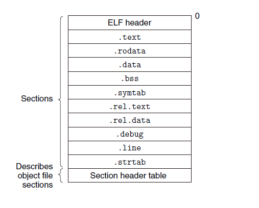
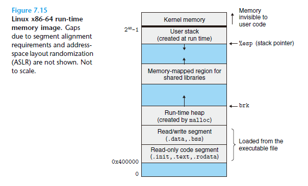
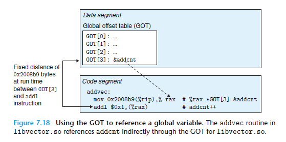
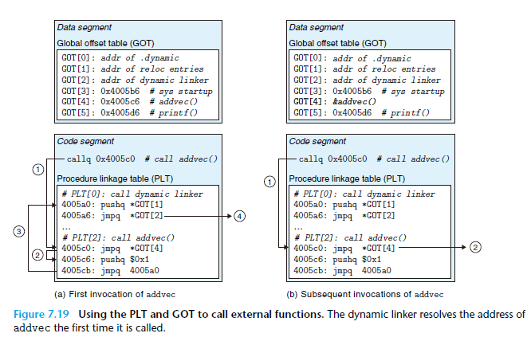

感情也存在着可以瞒骗的倾斜的限度。
说起来，就好像桌上放的铅笔滚动之后才开始觉察到桌子倾斜，滴在地板上的水珠流淌起来后才知道地板倾斜，感情的倾斜大类如此。
# 从源代码 (.c) 到可执行文件 (a.out)
当我们在 ubuntu 下敲出命令：
1 |
|
时，会自动在目录下生成一个可执行的文件 a.out ，然后执行它。然而这个过程却顺序地需要五个工具：
- Preprocessor（预处理器）：预处理代码文件（不能说是程序），譬如将宏定义展开。
- Compiler（编译器）：将预处理后的代码文件翻译成汇编代码（Assembly code）。有时也会进行一定的优化。此时文件变为（*.s）
- Assembler（汇编器）：将汇编代码翻译成机器代码（Machine code），此时文件变为目标文件（object file, *.o)
- Linker（链接器）：将目标文件（object file）、libraries 链接起来，也是这我要讨论的内容。
- Loader（装入程序）：执行可执行文件（Executable file, a.out) 时，将所需的数据和指令装入内存，并开始执行。
考虑下面这个 C 的代码文件（test.c）：
1 |
|
首先，执行 Preprocessor，输入：
1 |
|
其中，cpp 是 C Preprocessor 的缩写。然后会得到一个（.i）文件：
1 |
|
会发现它就比原始代码文件多了些头部的信息。
然后，继续执行 Compiler：
1 |
|
cc 本应该是 C Compiler 的缩写，但是现在已经集成化成 gcc 了。书上写的命令是用的 cc1，目前这个工具也不可见了。事实上，现在可以用 gcc 的不同参数 -S, -E, -O 来分步查看。test.s 里的内容就是很多汇编代码和一点其他内容。
1 |
|
然后执行 Assembler：
1 |
|
生成了目标文件 test.o。这个已经是 ELF（Executable and Linkable Format）的文件了，后面会讨论它的格式。
然后执行 Linker：
1 |
|
其中 f () 函数定义在 sum.c 中，sum.c 也和 test.c 一样预处理，编译，汇编成了 sum.o 文件。
执行完后就生成了 a.out 文件，就已经可以执行了。
# 静态链接
# Executable and Linkable Format
实际上，感觉很多人挺熟悉编译和汇编的过程，但不熟悉链接的过程。
实际上，之前的 test.o 文件就已经是一个 ELF 格式文件，可以从中读出很多 Linker 需要的信息。
如果在 ubuntu 下执行：
1 |
|
就可以得到一个包含.text section 和.data section 的 elf。
注意到，ELF 只是一种格式，满足这样格式的文件就可以被链接和执行。
那么这个格式要求有哪些内容？

-
.text代码段（正文段）：汇编出来的代码的机器码 -
.rodataread only data：只读数据段，譬如 printf 函数里的 format string，或者 switch 语句的 jump table 等。 -
.data数据段：被初始化了的全局变量和 static 变量。局部变量不在这里，在运行时的栈中。 -
.bss：未被初始化的全局变量和 static 变量。它目前是没被分配地址和空间的（这在后面符号表的讨论还会提到），在执行时会被 loader 分配空间并初始化为 0。为什么未被初始化的变量叫
.bss？历史原因，bss 原本是”block started by symbol“的缩写，起源于 IBM 704（1957）的汇编语言
-
.symtab符号表段：符号表包括了代码中定义和引用了的函数和全局变量的信息。它不包括局部变量。 -
.rel.text：记录了代码段里需要被 linker 重定位的函数。譬如.text里可能会 call 一些只定义但没实现的函数（譬如 test.c 中的 f ()），那么.rel.text就要记下来 call 指令的位置。注：.rel.text=relocatable text。 -
.rel.data：记录了代码段里需要被 linker 重定位的函数。譬如 test.c 中的 int not_ini; -
.debug：一些 debug 信息 == -
.line：从原始的 C 代码文件到.text段里机器码的映射。描述了每一行 C 代码在.text的哪里。 -
.strtabstring table：string table 就是一些字符串，包含了譬如 symtab 中的 name 之类的信息。
# Symbol table
我们打开上面 readelf 生成的 test.elf ，其中可以看到一个 Symbol table：
1 |
|
我们可以看一下这个表，一共有 8 个字段。
Num：Name 在strtable中的 offset。Value：在相关段中的地址偏移量 offset（后续仔细介绍）。Size：symbol 的大小Type：symbol 的类型（数据（OBJECT）、函数（FUNC）、数据段（SECTION）等）Bind：Local or GlobalVis：不知道干嘛不重要Ndx：ABS 表示 不应该重定位的符号；COM=COMMON 表示没被初始化且还没被重定位的符号；UND=UNDEFINED 表示被引用了却没被定义的符号。其余为数字的表示段号，譬如 Ndx=3 就是.data段，Ndx=1 就是.text段。
然后再看一眼 Value 字段。这需要参考 elf 中的 .data 段：
1 |
|
就会发现，被初始化的全局变量 ini 的 Value 就是 0，表示在 data 段中，偏移量为 0 时，值就是 3。而未被初始化的 not_ini 的 Value 为 4 其实记录了它地址的对齐要求（即存储他的地址需要是 4 的倍数，对齐）。
# 练习题目
考虑下面这两个代码文件
1 |
|
1 |
|
那么考虑定义的变量在符号表中的行为？
| .symtab entry? | Symbol type | Module where defined | Section | |
|---|---|---|---|---|
| buf | Yes | extern | m.o | .data |
| bufp0 | Yes | global | swap.o | .data |
| bufp1 | Yes | global | swap.o | COMMON |
| swap | Yes | global | swap.o | .text |
| temp | No |
# Symbol Resolution
这部分主要讨论，多个模块链接时，怎么定位每个符号在哪里。
首先很显然一个重要的问题就是，如果在多个 module 里定义了同名的符号（全局变量，函数等），Linker 该怎么选择。
实际上，符号被分为了 Strong Symbol 和 Weak Symbol。所有被声明但未被初始化，未被实现的符号为 Weak，反之就是 Strong。然后有重名的符号时，Linker 会依照以下规则：
- 多个 Strong Symbol 同名，直接报错。
- 一个 Strong Symbol 和多个 Weak Symbol 同名，则为那个 Strong 的符号初始化并分配地址，其他 Weak 的都指向同一个地址。
- 多个 Weak Symbol 同名，则随便选一个。
此时我们可以看一个经典的例子：
1 |
|
根据刚刚提到的规则，链接时会把两个 x 都指向同一个，也是 a.o 模块中的 x，因为它是 Strong 的。但是在 f 中修改时，把 x 当作 64 位来赋值，而实际上 x 的地址和 y 的地址只差了 32 位（链接器分配时，将其作为 int），于是 f（）中给 x 赋值实际上也覆盖了 y。
另一个问题是，譬如你写了很多个函数作为一个模块，譬如 stdlib，然后别人想引用时，如果也像之前一样链接，会很浪费空间。因为你的模块里可能有成千上万个函数，但是他想引用的就几个。
因此在 Linux 下有了 archive 格式的文件 (.a)，简单地看来他就是模块 (.o) 的合集，被称为静态链接库。在链接时，链接器会从中选取引用了的模块进行链接。
你可以制作自己的静态链接库，并链接使用它：
1 |
|
也可以输入：
1 |
|
其中 - static 表示静态链接，-L. 表示在当前目录下搜索，而 - lmy 就是 libmy.a 的缩写。（注意这里必须命名为 libXXX.a 才能用 - lXXX）
然后这里有一个非常生草的过程。就是链接器在扫描静态链接库和重定位时，是按照命令行输入的顺序做的。
譬如 main.o 调用了 libx.a 里的函数，libx.a 里的函数又调用了 liby.a 里的函数，而 liby.a 里的函数又调用了 libx.a 里的函数。
那你需要的命令就是：
1 |
|
即你的依赖项需要写在后面。当然，现在一般更好的设计都是静态链接库间是独立的，互不依赖的。
# Relocation
一旦确定了符号是哪个，就要开始分配地址了。
首先，代码的 Relocation Entries 被存在 .rel.text 段，数据的 Relocation Entries 被存在 .rel.data 段。譬如之前的 test.c 的 .rel.text 段：
1 |
|
看下 test 的 main 函数的反汇编：
1 |
|
1 |
|
会发现汇编里留了需要改变的机器码的位置，即需要把 <main+0x12> 改为 f 的入口，把 < main+0x1f > 改为 not_ini 的位置。而这在 Relocation Entries 中也有体现，即 offset 字段。然后还有 Type 字段比较重要：
R_X86_64_PC32：表示这是一个和 PC 有关的，32 位地址的 Relocation。实际上是一个 32 位有符号数 offset，再在运行时加上 PC 寄存器的值就得到了真实地址。R_X86_64_32：表示这是一个 32 位的绝对地址。现在几乎都被R_X86_64_PLT32替代。
addend 是一个有符号数，用来在不同 type 的重定位时修正地址（这看后面例子）。
重定位的伪代码算法：
1 |
|
然后我们看个例子。譬如下面这个模块的函数里面 call 了一个未实现的 sum（）函数和 array 数组：
1 |
|
在重定位时，会扫描到下面这个 relocation entry：
r.offset = 0xf
r.symbol = sum
r.type = R_X86_64_PC32
r.addend = -4
如果在链接时，分配了 ADDR (s)=ADDR (.text)=0x4004d0，ADDR (r.symbol) = ADDR (sum) = 0x4004e8。注意到这是链接器分配的，而虚拟内存中 0x400000 开始就是正文段和数据段：

根据算法就有：
refaddr = ADDR(s)+r.offset = 0x4004df
*refpte = (unsigned) (0x4004e8 -4 -0x4004df) = 0x5
所以地址为 e 的那条指令就变为
1 |
|
在运行这条指令后时，PC 寄存器相对这个大模块的偏移地址为 0x4004e3（即 4004de+5，因为这个指令占五个字节），然后再加上 0x5 就正好 call 到了 0x4004e8 处的 sum 函数。
另一个 relocation entry 是：
r.offset = 0xa
r.symbol = array
r.type = R_X86_64_32
r.addend = 0
这个就更简单，只需要看链接器给 .data section 分配的偏移地址，然后就加 0 给 mov 指令就好了。
# 动态链接
动态链接和静态链接本质的区别就是静态链接里符号的重定位发生在链接阶段，而动态链接中的符号重定位发生在运行时。
动态链接库被称为 Shared library（Shared objects），在 linux 是.so 文件。制作自己的动态链接库：
1 |
|
其中，-fpic 参数意思是要求产生 position independent code。然后就可以使用生成的库：
1 |
|
这样生成的 a.out 用 readelf 打开，里面会有一个.interp 的 section，记录了 dynamic linker 的位置。而 dynamic linker 自己也是个 shared object（e.g. Linux 下的 ld-linux.so）
事实上，有一种更能体现动态链接库本质的操作，即可以在 C 程序中这么写：
1 |
|
通过 dlopen 函数，我们可以直接在运行时就使用 libvector.so 中的函数 addvec 了。
# Position Independent Code
动态链接库的一大优势就是运行时重定位，可以让多个程序或进程共享同一块内存空间内的库代码，这样可以节省空间。而静态链接是 linker 进行的重定位，因此如果我们多个程序用同一个静态链接库，分别链接的话就会分配多个地址，浪费了空间。
1 |
|
譬如上面这个动态链接库就会导致 program1.out 和 program2.out 的 elf 中，符号的重定位时，即使用到了 libmy.a 中的同一个函数，也会重定位到两个位置。
Code that can be loaded without needing any relocations is known as position independent code (PIC).
这是怎么实现的呢？
首先如果 PIC 里引用了全局变量，这比较简单，因为程序在装入后，data segment 和 code segement 之间的地址总是差一个常数。所以我们可以维护一个 Global Offset Table（GOT），它是一个 8 字节的地址数组。这样对全局变量的引用就可以表示为：

如果 PIC 里引用了函数，这需要用到一个 lazy binding 的技术。我们需要一个 **Procedure Linkage Tabel（PLT）** 的表，它是一个 16 字节的地址数组。每个链接库里的函数都在表中有一个 entry。思想就是在第一次 call 库中的函数时，就会通过 GOT 跳进 PLT 对应的项，然后在 PLT 里执行一遍函数后跳到 PLT [0]（PLT [0] 是 dynamic linker），然后就会更新了 GOT 中的值。这样之后 call 同一个函数时，就会直接跳转到函数了。
下左图就是第一次 call addvec () 时的情况，右图是之后再 call 同一个函数的情况。
